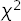

Overview¶
Introduction¶
This module contains tools that facilitate least-squares fits, as functions
of time t, of simulation (or other statistical) data for 2-point and
3-point correlators of the form:
Gab(t) = <b(t) a(0)>
Gavb(t,T) = <b(T) V(t) a(0)>
where T > t > 0. Each correlator is modeled using corrfitter.Corr2 for 2-point
correlators, or corrfitter.Corr3 for 3-point correlators in terms of amplitudes for
each source a, sink b, and vertex V, and the energies
associated with each intermediate state. The amplitudes and energies are
adjusted in the least-squares fit to reproduce the data; they are defined
in a shared prior (typically a dictionary).
An object of type corrfitter.CorrFitter describes a collection of correlators and is
used to fit multiple models to data simultaneously. Fitting multiple
correlators simultaneously is important if there are statistical
correlations between the correlators. Any number of correlators may be
described and fit by a single corrfitter.CorrFitter object.
We now review the basic features of corrfitter. These features are also
illustrated for real applications in a series of annotated
examples following this section. Impatient readers may wish to jump
directly to these examples.
About Printing: The examples in this tutorial use the print function
as it is used in Python 3. Drop the outermost parenthesis in each print
statement if using Python 2; or add
from __future__ import print_function
at the start of your file.
Basic Fits¶
To illustrate, consider data for two 2-point correlators: Gaa with the
same source and sink (a), and Gab which has source a and
(different) sink b. The data are contained in a dictionary data,
where data['Gaa'] and data['Gab'] are one-dimensional arrays
containing values for Gaa(t) and Gab(t), respectively, with
t=0,1,2...63. Each array element in data['Gaa'] and data['Gab']
is a Gaussian random variable of type gvar.GVar, and specifies the mean and
standard deviation for the corresponding data point:
>>> print(data['Gaa'])
[0.1597910(41) 0.0542088(31) ... ]
>>> print(data['Gab'])
[0.156145(18) 0.102335(15) ... ]
gvar.GVars also capture statistical correlations between different
pieces of data, if they exist.
We want to fit this data to the following formulas:
Gaa(t,N) = sum_i=0..N-1 a[i]**2 * exp(-E[i]*t)
Gab(t,N) = sum_i=0..N-1 a[i]*b[i] * exp(-E[i]*t)
Our goal is to find values for the amplitudes, a[i] and b[i], and the
energies, E[i], so that these formulas reproduce the average values for
Gaa(t,N) and Gab(t,N) that come from the data, to within the data’s
statistical errors. We use the same a[i]s and E[i]s in both
formulas. The fit parameters used by the fitter are the a[i]s and
b[i]s, as well as the differences dE[i]=E[i]-E[i-1] for i>0 and
dE[0]=E[0]. The energy differences are usually positive by construction
(see below) and are easily converted back to energies using:
E[i] = sum_j=0..i dE[j]
A typical code has the following structure:
import corrfitter as cf
def main():
data = make_data('mcfile') # user-supplied routine
models = make_models() # user-supplied routine
N = 4 # number of terms in fit functions
prior = make_prior(N) # user-supplied routine
fitter = cf.CorrFitter(models=models)
fit = fitter.lsqfit(data=data, prior=prior) # do the fit
print(fit)
print_results(fit, prior, data) # user-supplied routine
...
if __name__ == '__main__':
main()
We discuss each user-supplied routine in turn.
a) make_data¶
make_data('mcfile') creates the dictionary containing the data that is to
be fit. Typically such data comes from a Monte Carlo simulation. Exactly
how the data are assembled depends upon how Monte Carlo results are stored.
Imagine, for example, that
the simulation creates a file called 'mcfile' with layout
# first correlator: each line has Gaa(t) for t=0,1,2...63
Gaa 0.159774739530e+00 0.541793561501e-01 ...
Gaa 0.159751906801e+00 0.542054488624e-01 ...
Gaa ...
.
.
.
# second correlator: each line has Gab(t) for t=0,1,2...63
Gab 0.155764170032e+00 0.102268808986e+00 ...
Gab 0.156248435021e+00 0.102341455176e+00 ...
Gab ...
.
.
.
where each line is one Monte Carlo measurement for one or the other
correlator, as indicated by the tags at the start of the line. (Lines for
Gab may be interspersed with lines for Gaa since every line has a
tag.) A data file in this format can be analyzed using:
import gvar as gv
import corrfitter as cf
def make_data(filename):
dset = cf.read_dataset(filename)
return gv.dataset.avg_data(dset)
This reads the data from the file into a dataset, which is a dictionary whose values are two-dimenional arrays where the first index labels the Monte Carlo sample, and the second index labels time: for example,
>>> print(dset['Gaa'])
[ [0.159774739530e+00 0.541793561501e-01 ... ],
[0.159751906801e+00 0.542054488624e-01 ... ],
...]
Function gvar.dataset.avg_data() then
averages over the Monte Carlo samples. Thus
data = make_data('mcfile') creates a dictionary where
data['Gaa'] is a one-dimensional array of gvar.GVars, indexed by time,
obtained by averaging over the
Gaa data in the 'mcfile', and data['Gab'] is a similar array
for the Gab correlator. The correlator values for different
ts are typically correlated with each other.
Other data formats are readily adapted to this purpose. For example, the same Monte Carlo data might be stored in an hdf5 file:
import h5py
import gvar as gv
def make_data(filename):
h5file = h5py.File(filename, 'r')
dset = dict(
Gaa=h5file['/run5/Gaa'], Gab=hfile['/run5/Gab']
)
return gv.dataset.avg_data(dset)
Here we assume h5file['/run5/Gaa'] and hfile['/run5/Gab']
are hdf5 datasets that
have been configured, again, as two-dimensional numpy arrays, where the
first index is the Monte Carlo sample (configuration) index, and the second
index is time.
Function corrfitter.read_dataset() can read hdf5 files, so this
last example could also be handled by
def make_data(filename):
dset = cf.read_dataset(filename, h5group='/run5')
return gv.dataset.avg_data(dset)
provided filename ends in '.h5'. This
reads in all hdf5 datasets in group /run5.
b) make_models¶
make_models() identifies which correlators in the fit data are to be fit,
and specifies theoretical models (that is, fit functions) for these
correlators:
import corrfitter as cf
def make_models():
tdata = range(64)
tfit = tdata[2:]
models = [
cf.Corr2(datatag='Gaa', tdata=tdata, tfit=tfit, a='a', b='a', dE='dE'),
cf.Corr2(datatag='Gab', tdata=tdata, tfit=tfit, a='a', b='b', dE='dE'),
]
return models
For each correlator, we specify: the key used in the input data dictionary
data for that correlator (datatag); the t values,
tdata=[0,1,2...63], associated with each element of the fit data
for the correlator; the subset
of tdata values, tfit=[2,3,4...63], to be used in the fit;
and fit-parameter labels for the source (a) and
sink (b) amplitudes, and for the intermediate energy-differences
(dE). Fit-parameter labels identify the parts of the prior,
discussed below, corresponding to the actual fit parameters (the labels are
dictionary keys). Here the two models, for Gaa and Gab, are
identical except for the data tags and the sinks. make_models() returns
a list of models; the only parts of the input fit data that are fit are
those for which a model is specified in make_models().
Note that if there is data for Gba(t,N) in addition to Gab(t,N), and
Gba = Gab, then the (weighted) average of the two data sets will be
fit if models[1] is replace by:
cf.Corr2(
datatag='Gab', tmin=1, tmax=63, a='a', b='b', dE='dE',
otherdata='Gba',
)
Alternatively one could add a third Corr2 to models for Gba,
but it is more efficient to combine it with Gab, before the fit,
if they are
equivalent.
The arrays tdata and tfit provide more flexibility than is often
needed. Here, because there is data for all t values starting with 0,
we could have defined the correlator objects more simply, in terms
of the minimum and maximum t values used in the fit: for example,
cf.Corr2(datatag='Gaa', tmin=2, tmax=63, a='a', b='a', dE='dE')
corrfitter.Corr2 creates the obvious choices for
tdata and tfit from the information given.
c) make_prior¶
This routine defines the fit parameters that correspond to each fit-parameter
label used in make_models() above. It also assigns a priori values to
each parameter, expressed in terms of Gaussian random variables (gvar.GVars),
with a mean and standard deviation. The prior is built using a Python
dictionary (we use gvar.BufferDict but others would work):
import gvar as gv
def make_prior(N):
prior = gvar.BufferDict()
prior['a'] = gv.gvar(N * ['0.1(5)'])
prior['b'] = gv.gvar(N * ['1(5)'])
prior['dE'] = gv.gvar(N * ['0.25(25)'])
return prior
make_prior(N) associates arrays of N Gaussian random variables
(gvar.GVars) with each fit-parameter label, enough for N terms in the fit
function. These are the a priori values for the fit parameters, and they
can be retrieved using the label: setting prior=make_prior(N), for
example, implies that prior['a'][i], prior['b'][i] and
prior['dE'][i] are the a priori values for a[i], b[i] and
dE[i] in the fit functions (see above). The a priori value for each
a[i] here is set to 0.1±0.5, while that for each b[i] is
1±5:
>>> print(prior['a'])
[0.10(50) 0.10(50) 0.10(50) 0.10(50)]
>>> print(prior['b'])
[1.0(5.0) 1.0(5.0) 1.0(5.0) 1.0(5.0)]
Similarly the a priori value for each energy difference is 0.25±0.25.
(See the lsqfit documentation for further information on priors.)
d) print_results¶
The actual fit is done by fit=fitter.lsqfit(...), and print(fit)
right afterwards prints a summary of the fit results.
Further results are reported by print_results(fit, prior, data): for
example,
def print_results(fit, prior, data):
print(fit)
a = fit.p['a'] # array of a[i]s
b = fit.p['b'] # array of b[i]s
dE = fit.p['dE'] # array of dE[i]s
E = np.cumsum(dE) # array of E[i]s
print('Best fit values:)
print(' a[0] =',a[0])
print(' b[0] =',b[0])
print(' E[0] =',E[0])
print('b[0]/a[0] =',b[0]/a[0])
outputs = {'E0':E[0], 'a0':a[0], 'b0':b[0], 'b0/a0':b[0]/a[0]}
inputs = {'a'=prior['a'], 'b'=prior['b'], 'dE'=prior['dE'],
'data'=[data[k] for k in data])
print(fit.fmt_errorbudget(outputs, inputs))
The best-fit values from the fit are contained in fit.p and are accessed
using the labels defined in the prior and the corrfitter.Corr2 models. Variables like
a[0] and E[0] are gvar.GVar objects that contain means and standard
deviations, as well as information about any correlations that might exist
between different variables (which is relevant for computing functions of the
parameters, like b[0]/a[0] in this example).
The last line of print_results(fit,prior,data) prints an error budget for
each of the best-fit results for a[0], b[0], E[0] and
b[0]/a[0], which are identified in the print output by the labels
'a0', 'b0', 'E0' and 'b0/a0', respectively. The error for any
fit result comes from uncertainties in the inputs — in particular, from the
fit data and the priors. The error budget breaks the total error for a
result down into the components coming from each source. Here the sources are
the a priori errors in the priors for the 'a' amplitudes, the 'b'
amplitudes, and the 'dE' energy differences, as well as the errors in
the fit data data. These sources are labeled in the print output by
'a', 'b', 'dE', and 'data', respectively. (See the
gvar/lsqfit tutorial for further details on partial standard
deviations and gvar.fmt_errorbudget().)
Plots of the fit data divided by the fit function, for each correlator, are
displayed by calling fit.show_plots() provided the matplotlib
module is present.
Variations¶
A 2-point correlator is turned into a periodic function of t by
specifying the period through parameter tp. Doing so causes the
replacement (for tp>0)
exp(-E[i]*t) -> exp(-E[i]*t) + exp(-E[i]*(tp-t))
in the fit function. If tp is negative, the function is replaced by
an anti-periodic function with period abs(tp) and (for tp<0):
exp(-E[i]*t) -> exp(-E[i]*t) - exp(-E[i]*(abs(tp)-t))
Also (or alternatively) oscillating terms can be added to the fit by
modifying parameter s and by specifying sources, sinks and energies for
the oscillating pieces. For example, one might want to replace the sum of
exponentials with two sums
sum_i a[i]**2 * exp(-E[i]*t) - sum_i ao[i]**2 (-1)**t * exp(-Eo[i]*t)
in a (nonperiodic) fit function. Then an appropriate model would be, for example,
Corr2(
datatag='Gaa', tmin=2, tmax=63,
a=('a','ao'), b=('a','ao'), dE=('dE','dEo'), s=(1,-1)
)
where ao and dEo refer to additional fit parameters describing
the oscillating component. In general parameters for amplitudes and
energies can be tuples with two components: the first describing normal
states, and the second describing oscillating states. To omit one or the
other, put None in place of a label. Parameter s[0] is an overall
factor multiplying the non-oscillating terms, and s[1] is the
corresponding factor for the oscillating terms.
Very Fast (But Limited) Fits¶
At large t, two-point correlators are dominated by the term with the
smallest E, and often it is only the parameters in that leading term that
are needed. In such cases there is a very fast analysis that is often almost
as accurate as a full fit. Assuming a non-periodic correlator, for example,
we want to calculate energy E[0] and amplitude A[0] where:
G(t) = sum_i=0,N-1 A[i] * exp(-E[i]*t)
This is done using the following code
from corrfitter import fastfit
# Gdata = array containing G(t) for t=0,1,2...
fit = fastfit(Gdata, ampl='0(1)', dE='0.5(5)', tmin=3)
print('E[0] =', fit.E) # E[0]
print('A[0] =', fit.ampl) # A[0]
print('chi2/dof =', fit.E.chi2/fit.dof) # good fit if of order 1 or less
print('Q =', fit.E.Q) # good fit if Q > 0.05-0.1
where G is an array containing a two-point correlator, ampl is
a prior for the amplitudes A[i], dE is a prior for energy
differences E[i]-E[i-1], and tmin is the minimum time used in
the analysis.
fastfit is fast because it does not attempt to determine any
parameters in G(t) other than E[0] and A[0]. It does this
by using the priors for the amplitudes and energy differences
to remove (marginalize) all terms from the correlator other than the
E[0] term: so the data Gdata(t) for the correlator are replaced by
Gdata(t) - sum_i=1..N-1 A[i] * exp(-E[i]*t)
where A[i] and E[i] for i>0 are replaced by priors given by
ampl and (i+1) * dE, respectively. The modified correlator is then fit
by a single term, A[0] * exp(-E[0]*t), which means that a fit is not
actually necessary since the functional form is so simple. fastfit
averages estimates for E[0] and A[0] from all ts larger than
tmin. It is important to verify that these estimates agree with each
other, by checking the  of the average. Try increasing tmin if
the is too large; or introduce an SVD cut.
The energies from fastfit are closely related to standard effective
masses. The key difference is fastfit’s marginalization of terms
from excited states (i>0 above). This allows fastfit to use
information from much smaller ts than otherwise, increasing precision. It
also quantifies the uncertainty caused by the existence of excited states,
and gives a simple criterion for how small tmin can be (the ).
Results are typically as accurate as results obtained from a full
multi-exponential fit that uses the same priors for A[i] and E[i],
and the same tmin. fastfit can also be used for periodic and
anti-periodic correlators, as well as for correlators that contain terms that
oscillate in sign from one t to the next.
fastfit is a special
case of the more general marginalization strategy discussed later, in
Marginalization.
3-Point Correlators¶
Correlators Gavb(t,T) = <b(T) V(t) a(0)> can also be included in fits
as functions of t. In the illustration above, for example, we might
consider additional Monte Carlo data describing a form factor with the
same intermediate states before and after V(t). Assuming the data is
tagged by aVbT15 and describes T=15, the corresponding entry in the
collection of models might then be:
Corr3(datatag='aVbT15', T=15, tdata=range(16), tfit=range(1, 16),
Vnn='Vnn', # parameters for V
a='a', dEa='dE', # parameters for a->V
b='b', dEb='dE', # parameters for V->b
)
This models the Monte Carlo data for the 3-point function using the following formula:
sum_i,j a[i] * exp(-Ea[i]*t) * Vnn[i,j] * b[j] * exp(-Eb[j]*(T-t))
where the Vnn[i,j]s are new fit parameters related to a->V->b form
factors. Obviously multiple values of T can be studied by including
multiple corrfitter.Corr3 models, one for each value of T. Either or both of the
initial and final states can have oscillating components (include sa
and/or sb). If
there are oscillating states then additional Vs must be specified:
Vno connecting a normal state to an oscillating state, Von
connecting oscillating to normal states, and Voo connecting oscillating
to oscillating states.
Keywords tdata and tfit need not be specified when
there is data for every t=0,1...T: for example,
Corr3(
datatag='aVbT15', T=15, tmin=1,
Vnn='Vnn', a='a', dEa='dE', b='b', dEb='dE',
)
is equivalent to the definition above.
There are two cases that require special treatment. One is when
simultaneous fits are made to a->V->b and b->V->a. Then the
Vnn, Vno, etc. for b->V->a are the (matrix) transposes of
the the same matrices for a->V->b. In this case the models for the two
would look something like:
models = [
...
Corr3(
datatag='aVbT15', T=15, tmin=1,
Vnn='Vnn', Vno='Vno', Von='Von', Voo='Voo',
a=('a','ao'), dEa=('dE','dEo'), sa=(1,-1), # a->V
b=('b','bo'), dEb=('dE','dEo'), sb=(1,-1) # V->b
),
Corr3(
datatag='bVaT15', T=15, tmin=1, reverse=True,
Vnn='Vnn', Vno='Vno', Von='Von', Voo='Voo',
a=('a','ao'), dEa=('dE','dEo'), sa=(1,-1), # a->V
b=('b','bo'), dEb=('dE','dEo'), sb=(1,-1) # V->b
),
...
]
The second Corr3 is identical to the first except for the
datatag ('bVaT15'), and the keyword reverse=True, which
instructs the model to time-reverse its data, interchanging
t=0 with t=T, before fitting. Time-reversing in
effect turns b->V->a into a->V->b.
Another way to handle this last situation is to average the data
from b->V->a with that from a->V->b for a single fit. This
is done using one Corr3 but with the keyword reverseddata
to indicate the data to be time-reversed and then averaged with the
a->V->b data:
models = [
...
Corr3(
datatag='aVbT15', T=15, tmin=1, reverseddata='bVaT15',
Vnn='Vnn', Vno='Vno', Von='Von', Voo='Voo',
a=('a','ao'), dEa=('dE','dEo'), sa=(1,-1), # a->V
b=('b','bo'), dEb=('dE','dEo'), sb=(1,-1) # V->b
),
...
]
The second special case is for fits to a->V->a where the initial and final
particles are the same (with the same momentum). In that case, Vnn and
Voo are symmetric matrices, and Von is the transpose of Vno. The
model for such a case would look like, for example:
Corr3(
datatag='aVbT15', T=15, tmin=1,
Vnn='Vnn', Vno='Vno', Voo='Voo', symmetric_V=True,
a=('a','ao'), dEa=('dE', 'dEo'), sa=(1, -1), # a->V
b=('a','ao'), dEb=('dE', 'dEo'), sb=(1, -1) # V->a
)
Here only Vno is specified, since Von is its transpose.
Furthermore Vnn and Voo are (square) symmetric matrices when
symmetric_V==True and so only the upper part of each matrix is needed.
In this case Vnn and Voo are treated as one-dimensional arrays with
N(N+1)/2 elements corresponding to the upper parts of each matrix,
where N is the number of exponentials (that is, the number of
a[i]s).
Testing Fits with Simulated Data¶
Large fits are complicated and often involve nontrivial choices about
algorithms (e.g., chained fits versus regular fits), priors, and
SVD cuts — choices that affect the values and errors for the fit
parameters. In such situations it is often a good idea to test the
fit protocol that has been selected. This can be done by fitting simulated
data. Simulated data looks almost identical to the original fit
data but has means that have been adjusted to correspond to fluctuations
around a correlator with known (before the fit) parameter values: p=pexact.
The corrfitter.CorrFitter iterator simulated_pdata_iter creates any number of
different simulated data sets of this kind. Fitting any of these with
a particular fit protocol tests the reliability of that protocol since
the fit results should agree with pexact
to within the (simulated) fit’s errors. One or two fit simulations of this
sort are usually enough to establish the validity of a protocol. It is also
easy to compare the performance of different fit options by applying these in
fits of simulated data, again because we know the correct answers (pexact)
ahead of time.
Typically one obtains reasonable values for pexact from a fit to the
real data. Assuming these have been dumped into a file named "pexact_file"
(using, for example, fit.dump_pmean("pexact_file")), a testing script
might look something like:
import gvar as gv
import lsqfit
import corrfitter
def main():
dataset = gv.dataset.Dataset(...) # from original fit code
prior = make_prior(...)
fitter = corrfitter.CorrFitter(models = make_models(...))
n = 2 # number of simulations
pexact = lsqfit.nonlinear_fit.load_parameters("pexact_file")
for spdata in fitter.simulated_pdata_iter(n, dataset, pexact=pexact):
# sfit = fit to the simulated data sdata
sfit = fitter.lsqfit(pdata=spdata, p0=pexact, prior=prior...)
... check that sfit.p values agree with pexact to within sfit.psdev ...
Bootstrap Analyses¶
A bootstrap analysis gives more robust error estimates for fit parameters and functions of fit parameters than the conventional fit when errors are large, or fluctuations are non-Gaussian. A typical code looks something like:
import gvar as gv
import gvar.dataset as ds
from corrfitter import CorrFitter
# fit
dset = ds.Dataset('mcfile')
data = ds.avg_data(dset) # create fit data
fitter = Corrfitter(models=make_models())
N = 4 # number of terms in fit function
prior = make_prior(N)
fit = fitter.lsqfit(prior=prior, data=data) # do standard fit
print 'Fit results:'
print 'a', fit.p['a'] # fit results for 'a' amplitudes
print 'dE', fit.p['dE'] # fit results for 'dE' energies
...
...
# bootstrap analysis
print 'Bootstrap fit results:'
nbootstrap = 10 # number of bootstrap iterations
bs_datalist = (ds.avg_data(d) for d in ds.bootstrap_iter(dset, nbootstrap))
bs = ds.Dataset() # bootstrap output stored in bs
for bs_fit in fitter.bootstrap_iter(bs_datalist): # bs_fit = lsqfit output
p = bs_fit.pmean # best fit values for current bootstrap iteration
bs.append('a', p['a'])) # collect bootstrap results for a[i]
bs.append('dE', p['dE']) # collect results for dE[i]
... # include other functions of p
...
bs = ds.avg_data(bs, bstrap=True) # medians + error estimate
print 'a', bs['a'] # bootstrap result for 'a' amplitudes
print 'dE', bs['dE'] # bootstrap result for 'dE' energies
....
This code first prints out the standard fit results for the 'a' amplitudes
and 'dE' energies. It then makes 10 bootstrap copies of the original
input data, and fits each using the best-fit parameters from the original fit
as the starting point for the bootstrap fit. The variation in the best-fit
parameters from fit to fit is an indication of the uncertainty in those
parameters. This example uses a gvar.dataset.Dataset object bs to
accumulate the results from each bootstrap fit, which are computed using the
best-fit values of the parameters (ignoring their standard deviations). Other
functions of the fit parameters could be included as well. At the end
avg_data(bs, bstrap=True) finds median values for each quantity in
bs, as well as a robust estimate of the uncertainty (to within 30% since
nbootstrap is only 10).
The list of bootstrap data sets bs_datalist can be omitted in this example
in situations where the input data has high statistics. Then the bootstrap
copies are generated internally by fitter.bootstrap_iter() from the
means and covariance matrix of the input data (assuming Gaussian statistics).
Implementation¶
Background information on the some of the fitting strategies used by
corrfitter.CorrFitter can be found by doing a web searches for “hep-lat/0110175”,
“arXiv:1111.1363”, and “:arXiv:1406.2279” (appendix). These are papers by
G.P. Lepage and collaborators whose published versions are: G.P. Lepage et al,
Nucl.Phys.Proc.Suppl. 106 (2002) 12-20; K. Hornbostel et al,
Phys.Rev. D85 (2012) 031504; and
C. Bouchard et al, Phys.Rev. D90 (2014) 054506.